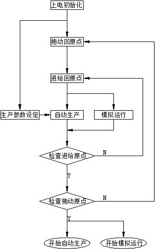

System function description
Modes, power, jogging, homing, clamp/cut, short and long length, length memory, and order scheduling.
2.1 Operating modes
The system has three modes. Rotate the Operating Mode knob on the control panel: left = Simulation, center = Manual, right = Automatic.
2.1.1 Manual mode
Default mode. At power-up, leave the selector in Manual. All station operations can be done by hand: drag-axis jog, feed home, clamp, and sawing. Complete flying-saw preparation in Manual before entering Simulation or Automatic.
2.1.2 Simulation mode
Offline monitoring. The material encoder is disabled. A virtual axis inside the controller generates production-like motion. You can vary virtual-axis speed to watch carriage behavior and isolate electrical or mechanical faults.
2.1.3 Automatic operation mode
Online production. The saw follows length and speed from the material encoder and performs fixed-length cutting at the operator-set length while monitoring carriage status.

2.2 Power management
2.2.1 Power supply system
2.2.2 Power system
Press the power button on the control panel to turn main power on or off. On starts initialization; the power-button lamp and the door RUN lamp both light. Press again to drop main power.
2.2.3 Drive system
Servo power starts automatically after power-up. Hold Drive, Feed, or Sawing power for 10 seconds to drop that servo. After the 20-second power-off protection, hold the same button 10 seconds to restore it. During start, lamps flash then go steady (~15 s) when that axis is in operating mode.
2.2.4 Enabling / disabling
Enable is applied automatically at power-up. A short press (~1 s) on Drive, Feed, or Sawing power disables that servo; another short press re-enables it. In operating mode the lamp is steady. A flashing lamp means powered but not in operating mode — the motor is de-energized and can be turned by hand. After a servo fault, press the power button to reset, then press again to return to operating mode.
2.2.5 Servo power-off protection
Holding Drive, Feed, or Cutting power more than 5 seconds in Manual drops that servo contactor. The axis cannot be powered again until 20 seconds have elapsed, to avoid damage from rapid start/stop cycles. Buttons are ignored during that window.
2.3 Jog function
2.3.1 Drag jog
In Manual, rotate the jog knob to move the saw carriage forward or reverse. At the front or rear limit the carriage stops and the screen reports the limit. Only the opposite direction remains available.
2.3.2 Feed jog
In Manual, rotate the feed jog knob to advance or retract the feed axis. Front/rear feed limits stop the axis and reverse-only motion applies. Feed origin is lost after feed jog — perform Feed Return to Origin before run mode.
2.4 Drag-to-origin / feed-home
After every power-up the KK-5S must complete drag-home and feed-home before Simulation or Automatic.
2.4.1 Drag-to-home
In Manual, press Drag to Home on the control panel. The drag-axis servo must be powered and enabled, and the carriage must sit between the limit switches.
- Carriage moves toward home and decelerates to a stop on the rear limit.
- When speed is zero it moves forward 50 mm (the configured drag-home distance).
- That position becomes dragged home.
Press Reset on the panel to cancel the move. Home is also lost after manual carriage moves, emergency stop, or fault alarms — home again before run mode.
2.4.2 Manual home position dragging
On the touchscreen simulation-status (or manual) page, Drag Manual Home records the current carriage position as origin without using the limit switch. Use it when the rear limit has failed, or for debug. Place the carriage near the normal drag-home stop. Do not treat this as the standard home.
2.4.3 Feed home
In Manual, press Feed Home. The feed servo drives forward at a set torque percentage until the tooth tips contact the material; that contact is recorded. It affects cut quality and blade life. Mechanics, pneumatics/hydraulics, and clamp must be healthy, and the workpiece must be held.
- Fixture clamps the material.
- Feed carriage retracts at low speed to the rear feed limit and stops.
- Feed advances at low speed until the blade contacts the material and stops.
- Feed motor retracts a fixed distance and stops — feed home is complete.
2.4.4 Manual feed home
Manual Feed Home on the simulation-status page stores the current feed position as origin without material or limits. Put the blade close to the material first. Not a standard home; useful when limits fail or no strip is present.
2.5 Clamping and 2.6 cutting
Clamp: in Manual, rotate the clamping knob. Use it to prove the mechanism and chase mechanical faults.
Cut: in Manual, with the feed axis at origin, press the manual cut button. This is a single static cut for watching the process and the cut face.
- Fixture clamps.
- Saw motor starts; blade rotates.
- After a two-second delay, the feed motor feeds.
- Cut complete; feed returns to start.
- Fixture releases.
- Saw motor stops.
2.7 Short-length and long-length
These functions cut a length other than the setpoint in Simulation or Automatic so scrap or weld-affected strip can be dropped without stopping the mill.
2.7.1 Short-length
The manual cut button becomes short-length in Simulation/Automatic when simulated or mill speed is ≤ 60% of maximum line speed. After sawing is complete (the function is inactive during the cut, and inactive above 60% speed):
- The system reads carriage direction.
- If going forward: decelerate to stop, return home at high speed, resume production.
- If returning: accelerate to maximum return speed, home, resume production.
2.7.2 Long-length
The manual clamp knob becomes long-length in Simulation/Automatic. Turn it to clamped to hold, then to unclamped to resume tracking:
- System reads carriage direction.
- Forward: decelerate, high-speed return home, wait.
- Return: accelerate to max return, home, wait.
- Turn the clamp knob to unclamped.
- Carriage resumes tracking and normal production.
2.7 Length memory function
In Automatic, the controller records the current piece length. After a normal exit, power loss, or fault stop, the next entry to Automatic offers a choice to return to the last saved length.
Press Yes / Continue and the carriage moves to the stored position. Encoder counts are ignored during that move — keep the strip still until the carriage arrives, then production continues. Press No / Restart (or start the mill) to skip; the window also closes when material length changes.
2.8 Order scheduling
Ten length schedules plus tube-type recipes cover mixed-length production. Setup is in §3.9.